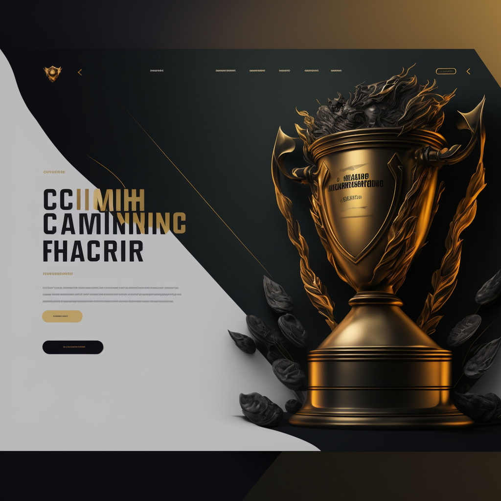
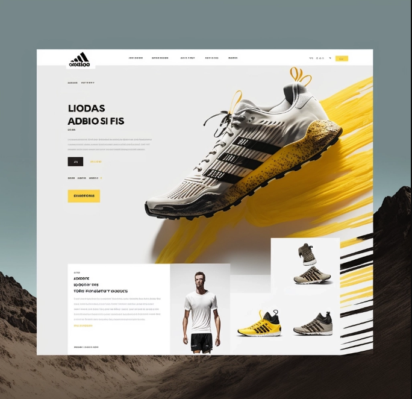

Blog
Como a IA MidJourney pode auxiliar no desenvolvimento frontend
Afinal, o que é a IA Midjourney?
A IA Midjourney é uma rede neural treinada por meio de aprendizado profundo, desenvolvida pela OpenAI, que é capaz de gerar imagens a partir de um prompt de texto. Ela é baseada em um modelo de linguagem chamado GPT-3, o que significa que ela foi treinada usando milhões de exemplos de texto da internet.
A IA Midjourney pode ser usada para gerar imagens em uma variedade de tópicos e estilos, como paisagens, animais, objetos, cenas e muito mais. Ela é capaz de compreender o significado do prompt de texto e gerar uma imagem que corresponda a ele.
Além disso, a IA Midjourney pode ser usada para gerar conteúdo para jogos, histórias, roteiros, obras de arte e muito mais. Ela é uma ferramenta poderosa para criatividade e inspiração para aqueles que buscam novas ideias.
Ela também pode ser acessada através de uma integração com o Discord, onde os usuários podem enviar prompts de texto e gerar imagens correspondentes diretamente no chat. Além disso, também pode ser acessada através de uma API para desenvolvedores para integrá-la em outros projetos.
Como ela pode ajudar no desenvolvimento Frontend?
Então, você se lembra de algum momento onde passou por uma ausência de criatividade? Pois é... É ai onde a IA Midjourney pode te ser útil, no desenvolvimento de inspiração para criação de sites e landing pages, visto que é capaz de gerar imagens baseadas em prompts de texto. Isso pode fornecer ideias visuais para a aparência e layout de sua landing page.
Exemplos práticos de sua utilização
Logo abaixo, listarei alguns exemplos que gerei utilizando a IA para exemplificar como ela pode te ajudar a desenvolver novas ideias de design para seus próximos projetos:

Comando utilizado para gerar este exemplo:
/imagine landing page, web page, catalog of champions, championship, trophy, ux, ui, 8k

Comando utilizado para gerar este exemplo:
/imagine landing page, web page, adidas store, ux, ui, 8k
Primeiros passos para começar a utilizá-la em seus projetos
Para usar a IA Midjourney para gerar inspiração para suas landing pages, siga estes passos:
1. Adicione o bot Midjourney ao seu servidor do Discord, digitando "!invite" no chat.
2. Utilize o comando "!midjourney" seguido de um prompt que descreva o tipo de imagem que você deseja gerar. Por exemplo, "!midjourney landing page de tecnologia" ou "!midjourney layout de site minimalista".
3. O bot irá gerar uma imagem de acordo com o prompt fornecido e enviá-la no chat.
4. Use a imagem gerada como inspiração para o layout e design da sua landing page. Você pode usar elementos da imagem, como cores, formas e disposição dos elementos, como base para o seu projeto.
5. Além disso, você também pode experimentar com diferentes prompts e parâmetros para gerar várias imagens e obter mais inspiração.
Lembre-se de que a IA Midjourney é apenas uma ferramenta de inspiração e não é capaz de criar uma landing page completa. Para criar uma landing page é necessário usar outras ferramentas específicas para tal como as mencionadas anteriormente.